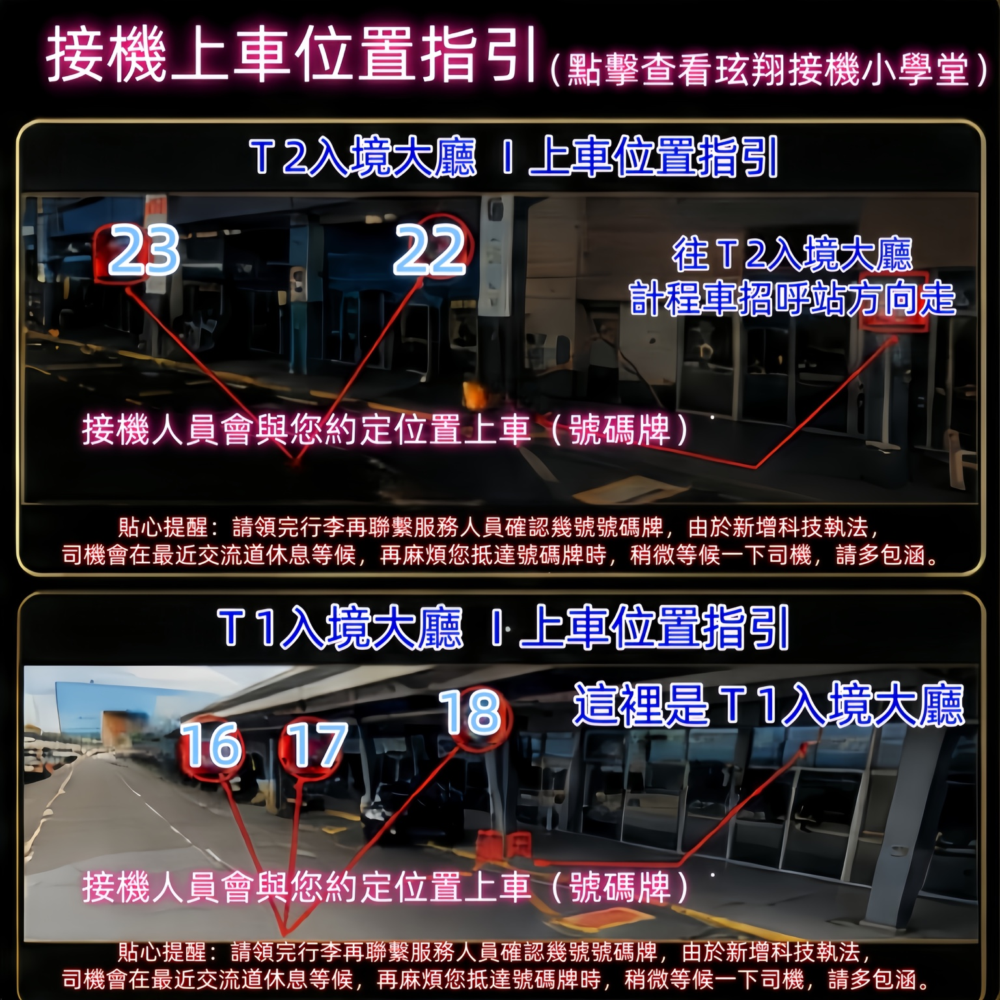
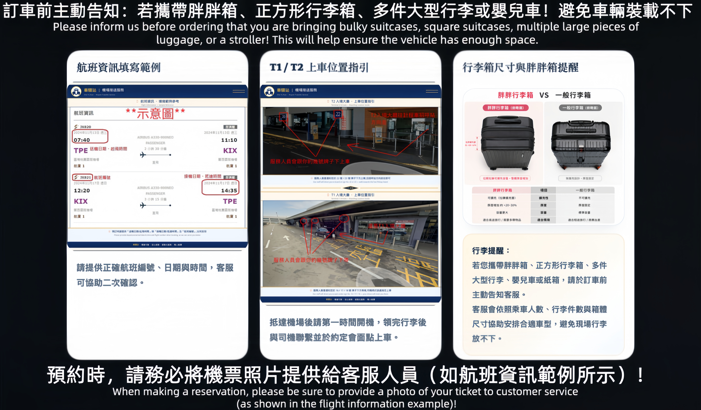
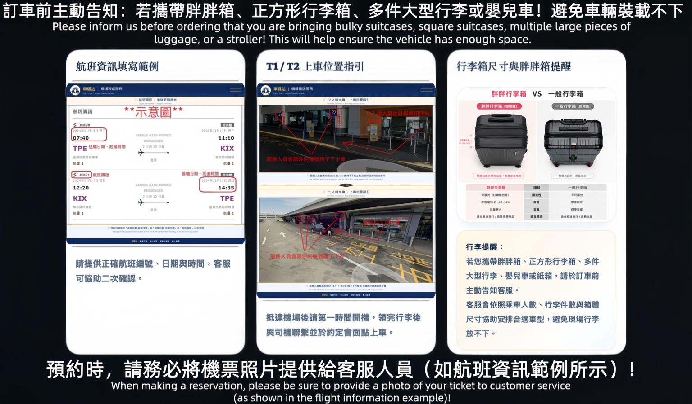
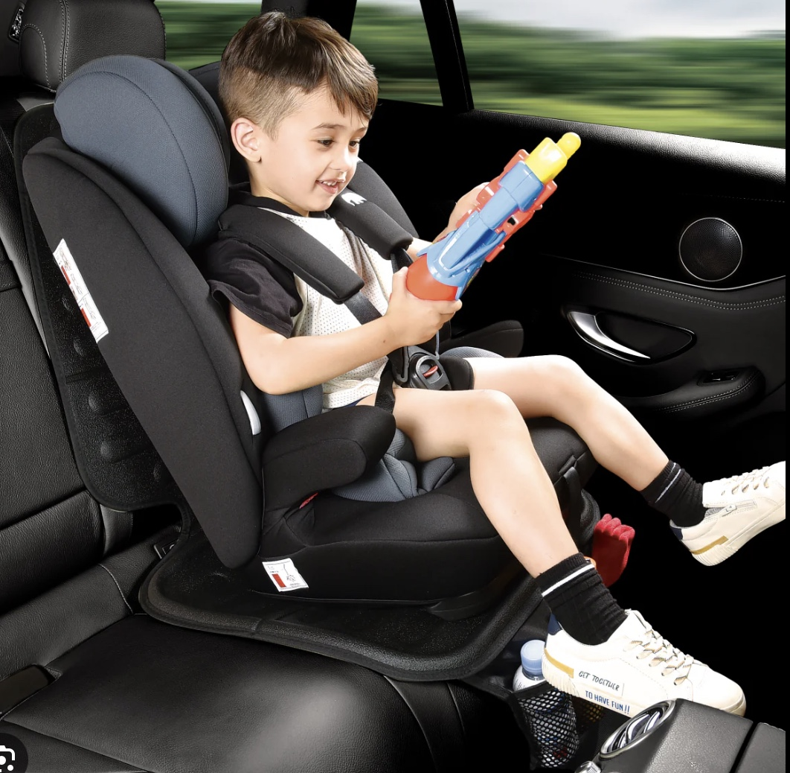

航班資訊怎麼填？Flight information sample

請提供 航班編號、送機起飛時間、接機抵達時間。航班不是填「早上那班」，客服不是機場占卜師。
✅ 範例：JX820、2026/11/13、07:40 起飛
小學堂幫您把 航班資訊、上車地點、行李箱尺寸 講解到一聽就懂。 不需要研究到懷疑人生，照著填、照著等，車就會優雅出現。
接機請提供正確航班編號與時間。送機也請記得填寫起飛日期與時間，最好附上航班資訊截圖，客服就不用開啟通靈模式。

請提供 航班編號、送機起飛時間、接機抵達時間。航班不是填「早上那班」，客服不是機場占卜師。

抵達機場後，請先將手機開機、領完行李後，與服務司機聯繫。司機會告知您到指定號碼牌下方等候。
胖胖箱、正方形行李箱、多件大型行李、嬰兒車、紙箱，請訂車前先告知客服。
若您攜帶 胖胖箱、正方形行李箱、多件大型行李、嬰兒車或紙箱，請於訂車前主動告知客服。 我們會依乘車人數、行李件數與箱體尺寸安排合適車型。

照這四步走，客服好安排，司機好接您，您也不用在機場上演迷路小劇場。
送機填起飛時間，接機填表定抵台時間。
例如 JX820、BR198、CI123，越完整越漂亮。
含胖胖箱、嬰兒車、紙箱、大型物品都請訂車時一併說。
依人數與行李安排適合車款，讓車廂不委屈。
安全座椅、增高墊、寵物接送、舉牌、行李搬運、開立收據、開立統編、刷卡服務等，請於訂車前告知客服。

適合較大幼童，依年齡、身高與體重協助安排。

適合嬰幼兒與較小寶寶，數量有限，建議提前預約。

讓安全帶高度更合適，提升兒童乘坐安全。

寵物需使用外出籠、提袋或寵物籠，保持車內舒適整潔。寵物專車建議選購商務車型。

專人手持旅客姓名牌，協助聯繫司機並引導至上車位置，適合外國友人、商務人士與觀光旅客。

大型行李、樓梯搬運與特殊協助，請提前告知客服，避免司機現場突然轉職搬家公司。
台中凌晨怎麼去桃園機場、半夜沒有高鐵怎麼去機場、家庭出國行李很多適合叫什麼車、九人座可以放幾個29吋行李箱、商務人士適合哪種機場接送、包車旅遊是不是比租車方便、桃園機場凌晨接送推薦、紅眼班機怎麼去機場、可帶寵物機場接送。
台北車站接送、南港展覽館接送、信義區商務接送、桃園高鐵接送、台中高鐵接送、逢甲夜市接送、日月潭包車、清境農場包車、阿里山包車、墾丁包車、花蓮太魯閣包車、台東伯朗大道包車。
taiwan airport transfer, taiwan private driver, taiwan private charter, taiwan vip transfer, taoyuan airport transfer, taichung airport transfer, luxury airport transfer taiwan, alphard transfer taiwan, private tour taiwan, taiwan chauffeur service.
租賃車相關問題、機場接送、包車旅遊、商務接送、觀光包車與半隱藏語意 SEO。
日租、週租、月租、長期租、企業租車與臨時代步。
機場接送、高鐵接送、火車站接送、港口接送與團體接送。
兒童安全座椅、ETC、車載 Wi-Fi、行李協助與舉牌服務。